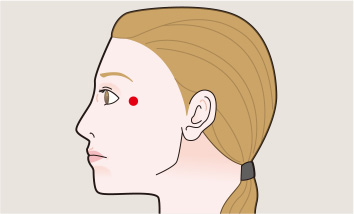
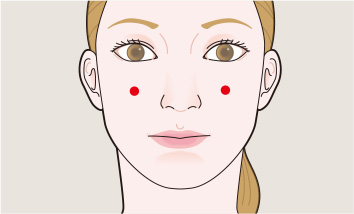

EYESTRAIN
Eyestrain is not an eye disease but a group of symptoms occurring as a result of an extended use of eyes. A
common experience may be extended computer use, which symptoms include headaches, blurry vision, and other
discomfort such as feeling of dryness.

Ex-HN 5 Tai Yang
(supreme Yang)
Recommended PYONEX
Location
in the depression approximately one middle finger with dorsal to the midpoint between the lateral border
of the eyebrow and the outside corner of the lid.

St 2 Si Bai
(Four Whites)
Recommended PYONEX
Location
with the patient staring directly ahead, directly below the pupil, in the depression at the infraorbital
foramen.